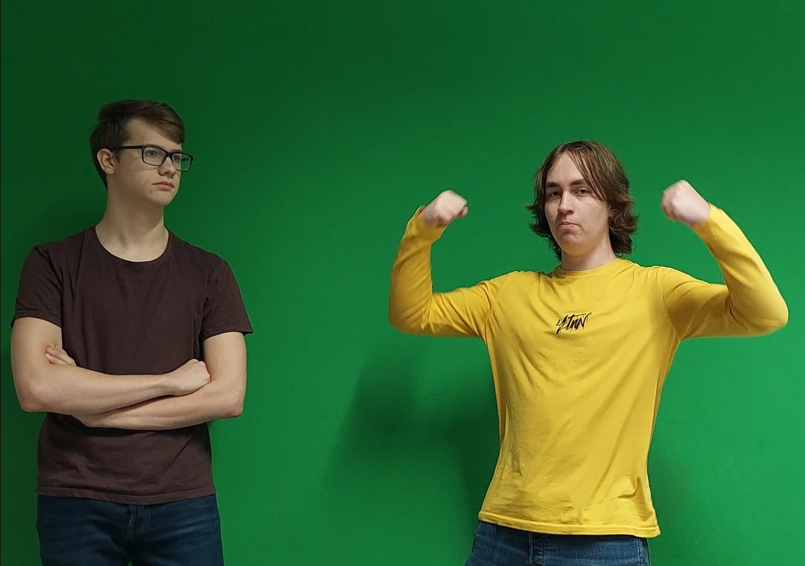

How we make movies

We spend a lot of time making sure our products are as good as we can possible make them. With each movie, moving foward and learning from our mistakes, we aim to inspire others to do the same
That is why, we wish to help inspiring film makers, to show them what we think about when creating our movies.
